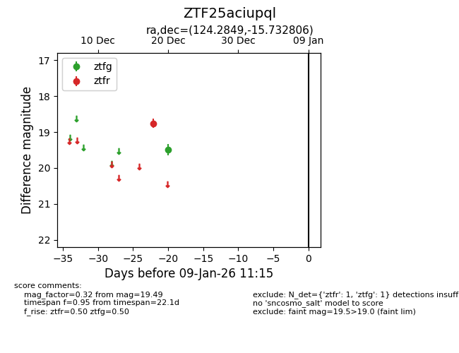
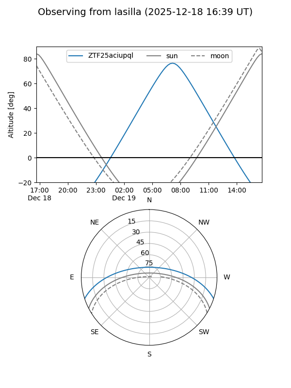
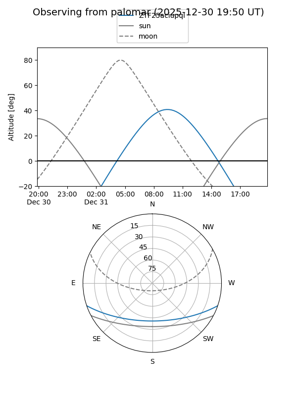

ZTF25aciupql
Target ZTF25aciupql at 2025-12-18 12:52
Aliases and brokers:
FINK: fink-portal.org/ZTF25aciupql
Lasair: lasair-ztf.lsst.ac.uk/objects/ZTF25aciupql
ALeRCE: alerce.online/object/ZTF25aciupql
alt names
ZTF25aciupql (ztf,fink_ztf)
Coordinates:
equatorial (ra, dec) = 124.2849,-15.73281
equatorial (HMS+DMS) = 08:17:08.38,-15:43:58.10
galactic (l, b) = (237.0766,+10.91097)
Photometry
last ztfr=18.76
1 ztfr detections
Lightcurve

Visibility


Additional plots